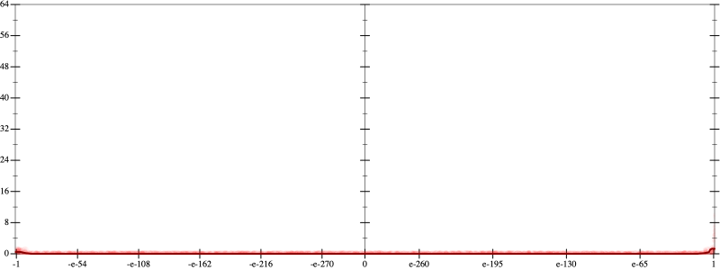
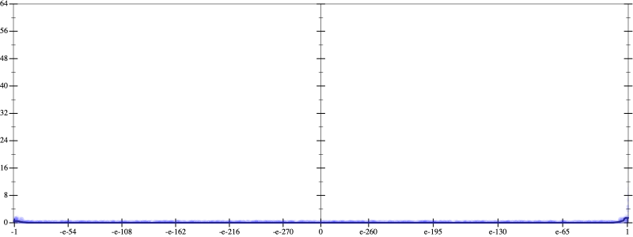
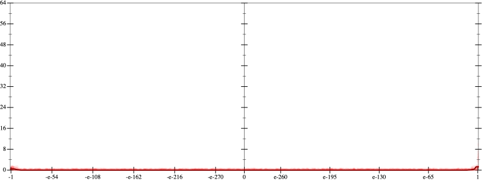
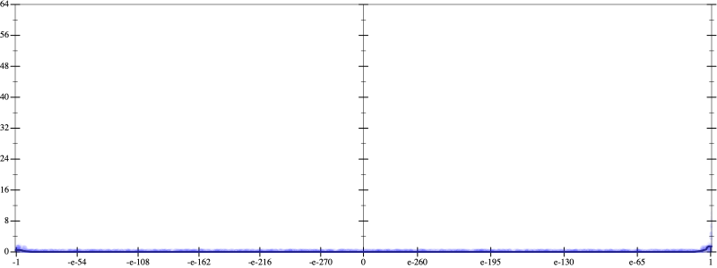

Initial program 0.0
\[\left(\left(\left(\left(1.0 + -5.0 \cdot x\right) + 5.0 \cdot \left(x \cdot x\right)\right) + -1.666667 \cdot \left(\left(x \cdot x\right) \cdot x\right)\right) + 0.208333 \cdot \left(\left(\left(x \cdot x\right) \cdot x\right) \cdot x\right)\right) + -0.008333 \cdot \left(\left(\left(\left(x \cdot x\right) \cdot x\right) \cdot x\right) \cdot x\right)\]
- Using strategy
rm Applied add-log-exp0.0
\[\leadsto \left(\left(\left(\left(1.0 + -5.0 \cdot x\right) + \color{blue}{\log \left(e^{5.0 \cdot \left(x \cdot x\right)}\right)}\right) + -1.666667 \cdot \left(\left(x \cdot x\right) \cdot x\right)\right) + 0.208333 \cdot \left(\left(\left(x \cdot x\right) \cdot x\right) \cdot x\right)\right) + -0.008333 \cdot \left(\left(\left(\left(x \cdot x\right) \cdot x\right) \cdot x\right) \cdot x\right)\]
 
